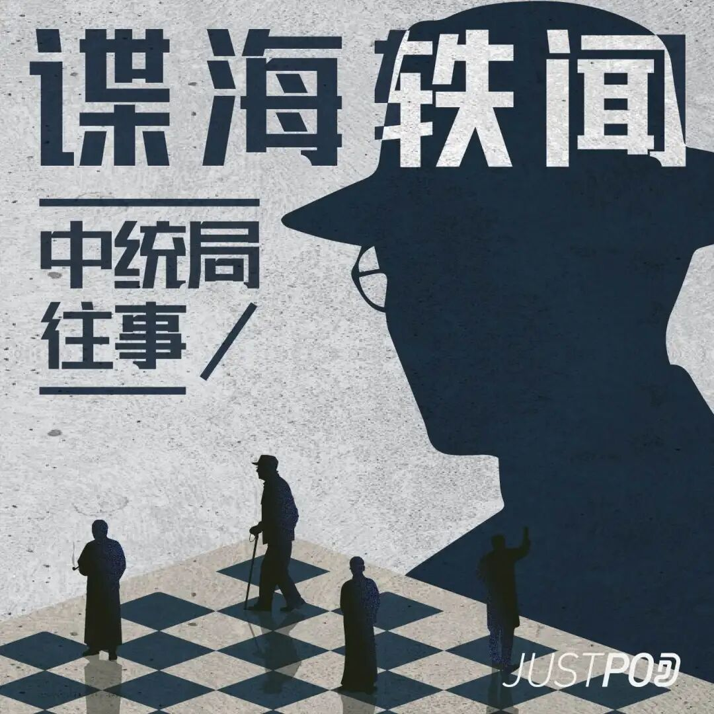
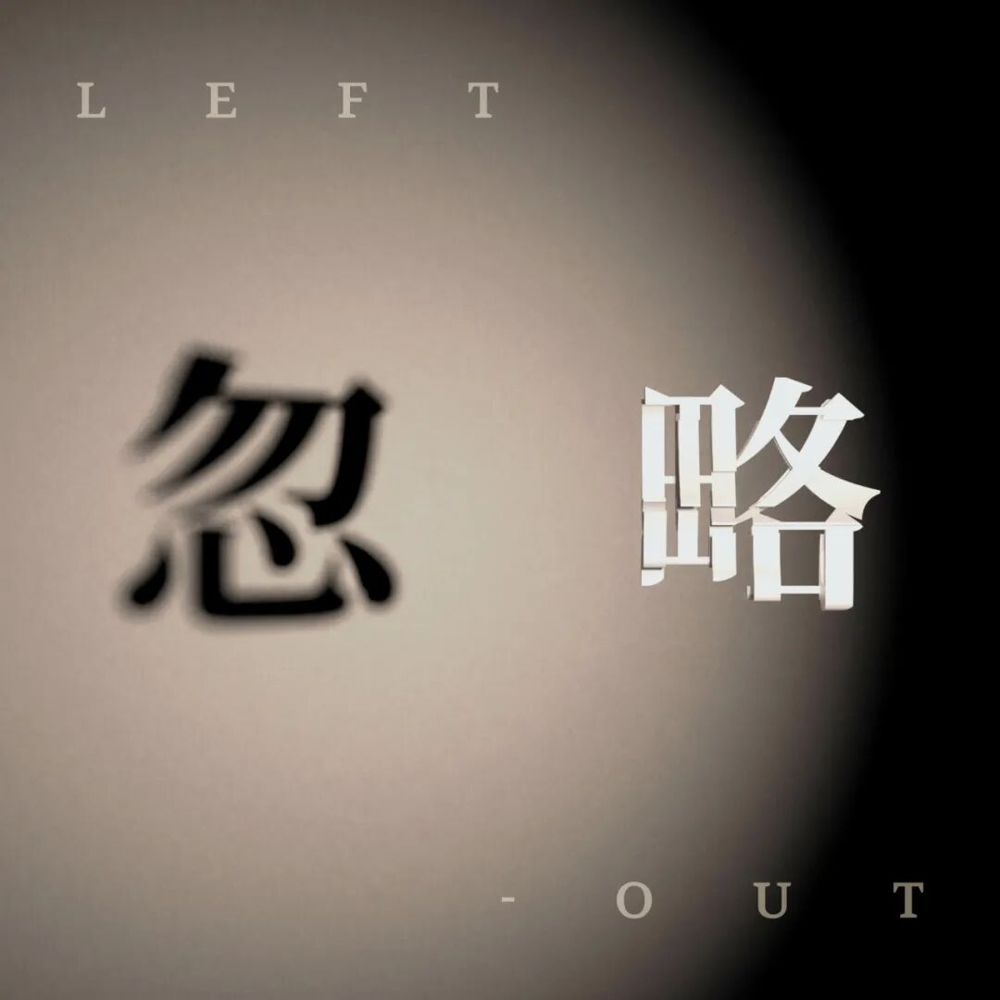

中统局往事06｜乱世末路与特务群像：张冲、黄凯、季源溥及其他


本期介绍
在中统这台政治机器中，并非人人顺遂登顶。从才华横溢有志难酬的张冲，到派系倾轧中黯然离场的黄凯，再到被埋没的天才特工周光亚，中统的中层干部中其实存在着许多「失意者」。留美、留德、留苏的不同背景如何成为国民党派系斗争的基础？源自司法系统的「反省院」制度，如何被中统渗透掌握？上层政府改革，第三代局长季源溥如何应对中统经济危机？请听郑诗亮带来的精彩分享！
本期试听
本期为全新付费播客系列《谍海轶闻｜中统局往事》第六集，现在已全集更新完毕！以上音频为试听版本，完整内容欢迎下拉至文章末尾扫描二维码解锁收听。
本期提到
张冲 / 徐恩曾 / 季源溥 / 黄凯 / 赵毓麟 / 庄祖方 / 周光亚 / 池步洲 / 姜毅英 / 戴笠 / 张国焘 / 杨永泰 / 廖承志 / 叶秀峰 / 顾顺章 / 陈果夫 / 陈立夫 / 李士群 / 丁默邨 / 宋子文 / 宣铁吾 / 孔令侃 / 张道藩 / 谷正伦 / 白川义则 / 重光葵 / 尹奉吉 / 金九 / 杨匏安 / 邓演达 / 刘少康办公室 / 理查德-佐尔格 / 牛兰 / 出云号巡洋舰
时间轴
正片开始
留美、留德、留日、留苏人才在老蒋心中的不同定位与用途
懂宣传、懂人事、有战略眼光的干将张冲
张冲与徐恩曾之间的权斗、提防与意识形态分歧
「牛兰事件」中，张冲通过高额赎金试探苏联情报网
黄凯：中统的「天才调查员」与「天才教员」
争取政治资本：张冲与黄凯力主扩大「反省院」
南昌绝境下，杨永泰如何设计助老蒋反败为胜
中统考核落后于军统，压力严峻下黄凯成为替罪羊
中统的撑门面行动：黄凯策划炸日舰「出云号」
中统基层员工眼中张国焘的叛变轶事与生活细节
泼脏水、统制经济：第三代局长季源溥在上海的敛财术
中统在崩溃前夕遭遇的缩编与财政危机
另一条世界线上的顾顺章：「情报圣手」周光亚的埋没
池步洲：精通日语的机电专家如何截断日军电码密语 本期嘉宾 郑诗亮，文史研究者 程衍樑（微博@GrenadierGuard2）
解锁全部内容
由于平台之间不互通，所以您需要根据自己的收听习惯选择平台购买，下方二维码可直达小宇宙app或微信公众号，享受优惠价一次性购齐整季六期，网易云音乐与喜马拉雅目前仅支持单集付费。

👂🏻
文稿、排版：Yo编辑：思钊


中统局往事05｜叛徒与卧底：从丁默邨、李士群「76号」魔窟到沈之岳的双面间谍疑云





